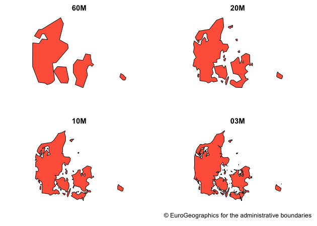
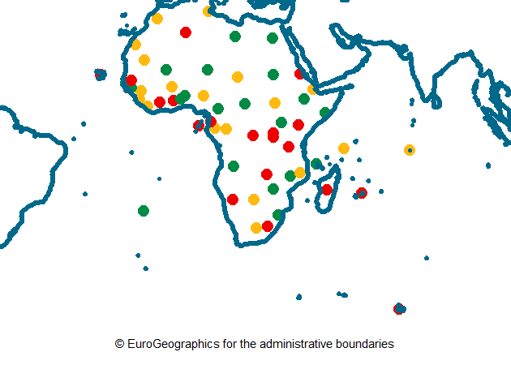

giscoR is a API package that helps to retrieve data from Eurostat - GISCO (the Geographic Information System of the COmmission). It also provides some lightweight data sets ready to use without downloading. Currently only the Administrative Units / Statistical Units data sets are supported.
GISCO (FAQ) is a geospatial open data repository including several data sets as countries, coastal lines, labels or NUTS levels. The data sets are usually provided at several resolution levels (60M/20M/10M/03M/01M) and in 3 different projections (4326/3035/3857).
Note that the package does not provide metadata on the downloaded files, the information is available on the API webpage.
Recommended packages
It is recommended also to install the eurostat package(http://ropengov.github.io/eurostat/):
Leo Lahti, Przemyslaw Biecek, Markus Kainu and Janne Huovari.
Retrieval and analysis of Eurostat open data with the eurostat package. R Journal 9(1):385-392, 2017. R package version 3.6.5.
Some other packages recommended for visualization are:
Some of the datasets identify the countries by using the Eurostat Country Code. The equivalence on ISO-3 (and another codification systems) could be done using the countrycode package:
library(countrycode) eurostat <- c("ES","UK","EL") countrycode(eurostat,"eurostat","cldr.name.en") #> [1] "Spain" "United Kingdom" "Greece" countrycode(eurostat,"eurostat","cldr.name.fr") #> [1] "Espagne" "Royaume-Uni" "Grèce" countrycode(eurostat,"eurostat","iso3c") #> [1] "ESP" "GBR" "GRC" countrycode(eurostat,"eurostat","iso2c") #> [1] "ES" "GB" "GR" countrycode(eurostat,"eurostat","fips") #> [1] "SP" "UK" "GR"
Installation
You can install the developing version of giscoR with:
library(remotes) install_github("dieghernan/giscoR")
A note on caching
Some data sets (as Local Administrative Units - LAU, or high-resolution files) may have a size larger than 50MB. You can use giscoR to create your own local repository at a given location passing the following option:
options(gisco_cache_dir = "./path/to/location")
When this option is set, giscoR would look for the cached file and it will load it, speeding up the process.
You can also download manually the files (.geojson format) and stored on that library.
Example
library(giscoR) library(sf) # Mapping with cartography countries <- gisco_get_countries(10, crs = 3857) countriescoast <- gisco_get_countries(10, spatialtype = "COASTL", crs = 3857) countries <- merge(countries, gisco_countrycode, all.x = TRUE) library(cartography) par(mar = c(1, 0, 1, 1), bg = NA) plot( st_geometry(countries), col = "#f7cb99", border = NA, bg = "grey90", ylim = (c(-10, 11) * 1000000) ) pal <- carto.pal("multi.pal", 20) typoLayer( countries, border = NA, var = "un.regionsub.name", col = pal, legend.pos = "n", add = TRUE ) plot(st_geometry(countriescoast), border = "black", add = TRUE) layoutLayer("UN Subregions, 2016", sources = gisco_attributions(copyright = FALSE), theme = "blue.pal",)

# Example with tmap library(tmap) coast <- gisco_get_coastallines(crs = 3035) grat <- st_transform(st_graticule(), st_crs(coast)) tm_shape(coast) + tm_fill() + tm_borders(col = "#0978AB", lwd = 2, alpha = 0.5) + tm_shape(grat) + tm_lines(col = "grey60") + tm_layout(attr.outside = TRUE, frame = FALSE) + tm_credits(gisco_attributions(copyright = FALSE), position = c("LEFT", "BOTTOM"))

Contribute
Check the Github page for source code.
Contributions are very welcome:
- Use issue tracker for feedback and bug reports.
- Send pull requests
- Star us on the Github page
Copyright notice
From GISCO > Geodata > Reference data > Administrative Units / Statistical Units
When data downloaded from this page is used in any printed or electronic publication, in addition to any other provisions applicable to the whole Eurostat website, data source will have to be acknowledged in the legend of the map and in the introductory page of the publication with the following copyright notice:
EN: © EuroGeographics for the administrative boundaries
FR: © EuroGeographics pour les limites administratives
DE: © EuroGeographics bezüglich der Verwaltungsgrenzen
For publications in languages other than English, French or German, the translation of the copyright notice in the language of the publication shall be used.
If you intend to use the data commercially, please contact EuroGeographics for information regarding their licence agreements.